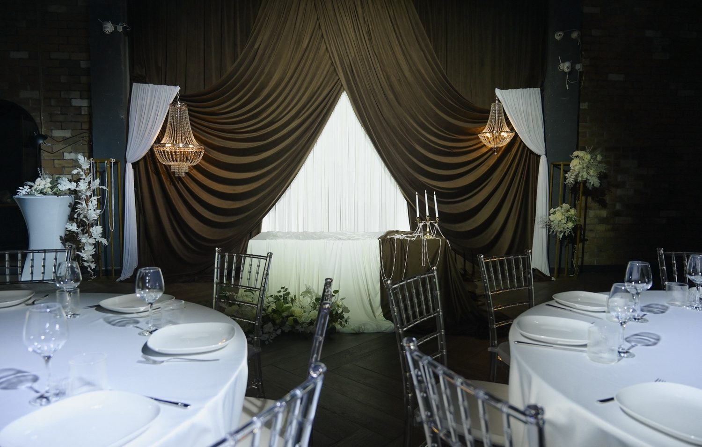
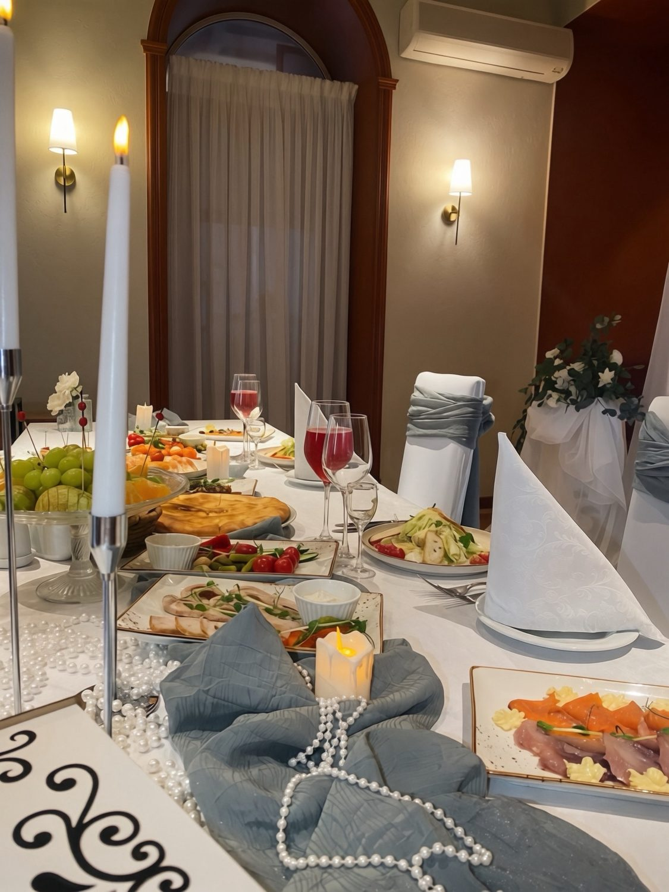

Свадьба под ключ
Меню, сервировка, декор, координатор. От 30 гостей, подготовка 3–4 недели.
кейтеринг + декор
Меню, подача, декор и координатор. Свадьбы, вечеринки и корпоративы от 10 до 300 гостей в Сыктывкаре и районе города.
Меню, сервировка, декор, координатор. От 30 гостей, подготовка 3–4 недели.
Рассадка, горячее по подаче, официанты. От 15 гостей, от 7 дней.
Мини-закуски, станции, выездной коктейль, кейтеринг в офис. От 10 гостей.
Шеф готовит у вас дома или на площадке: гриль, паста, тапас. От 8 гостей.
от 1 800 ₽
от 2 800 ₽
от 4 200 ₽
Оливковый бархат, хрустальные люстры, жемчуг и живые цветы. Тёмный лофт с кирпичными стенами стал сценой.



Белые драпировки и живой эвкалипт, пыльно-голубые ленты на стульях, жемчуг и свечи на длинных столах у арочных окон.





Работы в формате «Фуршет» скоро появятся здесь. Хотите посмотреть примеры сейчас? Напишите нам.
Запросить примерыРаботы в формате «Банкет» скоро появятся здесь. Хотите посмотреть примеры сейчас? Напишите нам.
Запросить примерыРаботы в формате «Выездной повар» скоро появятся здесь. Хотите посмотреть примеры сейчас? Напишите нам.
Запросить примерыБольше работ — во ВКонтакте. Открыть страницу
От 10 гостей или от 25 000 ₽, что больше.
Свадьбы за 1–2 месяца, остальное от 7 дней. Фуршет возможен за 2 дня.
По Сыктывкару и в районе города. Дальние выезды обсуждаем отдельно.
Перенос бесплатно за 14 дней до события. При отмене за 7 дней предоплата не возвращается.
Напишите дату, формат и число гостей. Ответим в сообщениях.
Сыктывкар и район города